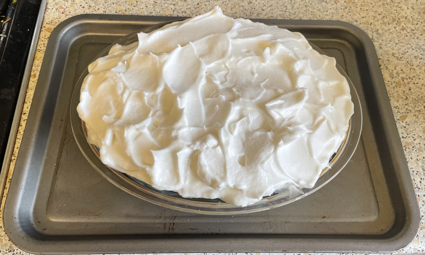
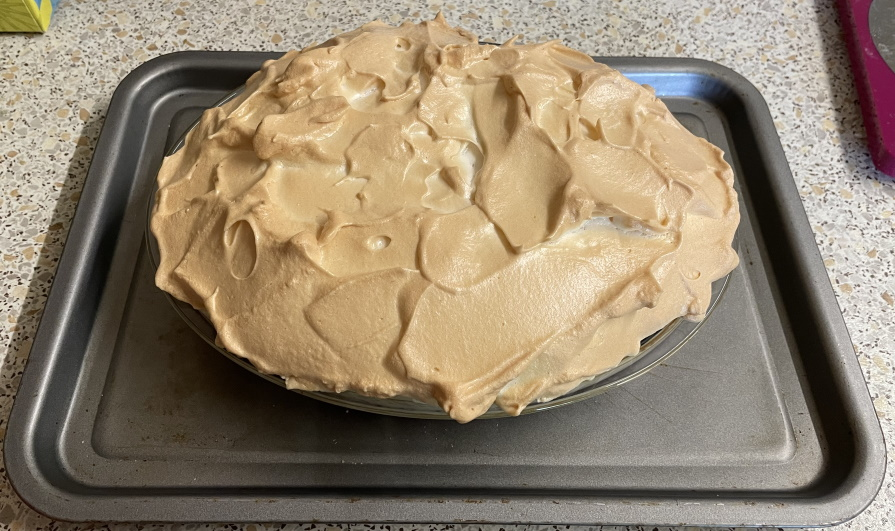

King of puddings
Custard
- Preheat oven to 150°C
- Spread 6 tbsp of jam over bottom of pie dish
- Mix
- 600ml (620g) whole milk
- 30g caster sugar
- ¼ tsp vanilla extract
- Separate 3 eggs
- Slowly mix in
- 3 egg yolks
- 1 whole egg
- ½ cup (40g) of fine breadcrumbs
- Stir well and then pour mixture over jam
- Bake in oven for 1 hour or until set
- Whisk with stand mixer (4-5) to soft peaks
- 3 egg whites
- ½ tsp white wine vinegar
- ½ tsp vanilla extract
- Add slowly and whisk for few mins to stiff peaks
- Spread over base while hot to seal the meringue to the base
- Bake in oven for 20 mins at 150°C until meringue is set and lightly browned
- Leave to cool for 2 hours to set, then chill in fridge for 1 hour
Notes
- Made: 10 Sep 2022, blackcurrant jam, 40g sugar in meringue, 25g sugar in milk = almost no sweetness
- try 100ml single cream for milk, 50g breadcrumbs
- try blueberry / cherry jam
- panko breadbrumbs work ok
- original amounts: 4 tbsp jam, 85g sugar in custard, 100g sugar in meringue, 115g breadcrumbs

